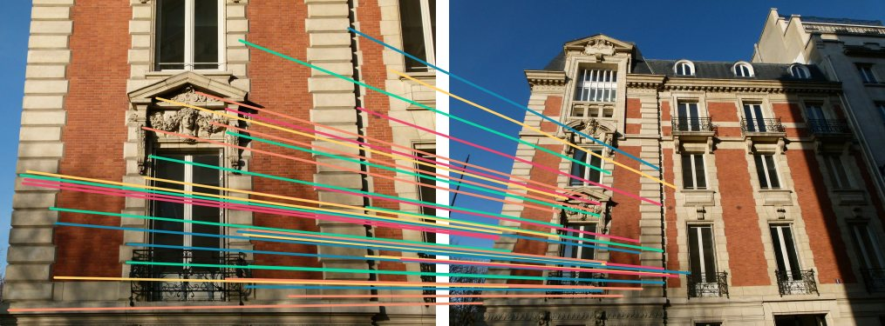
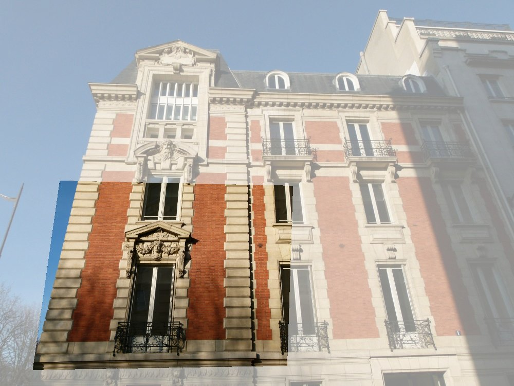
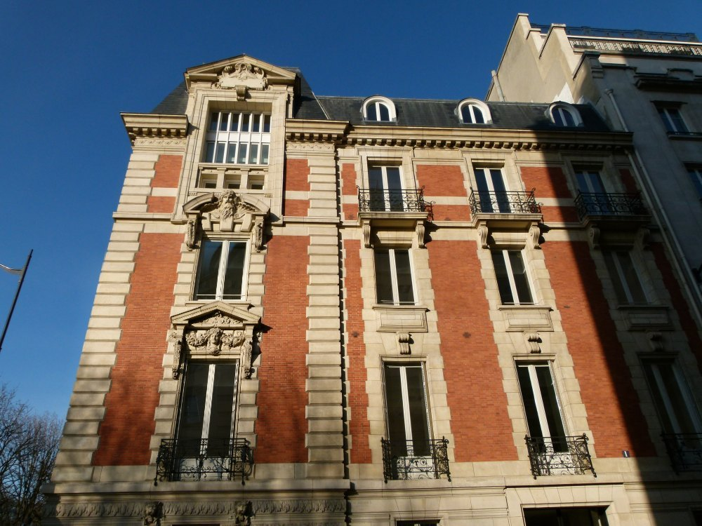
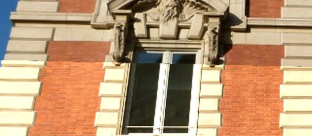
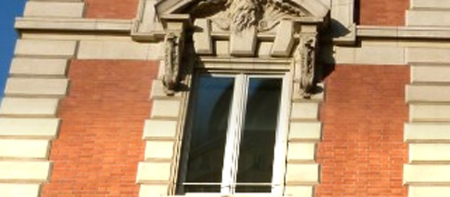
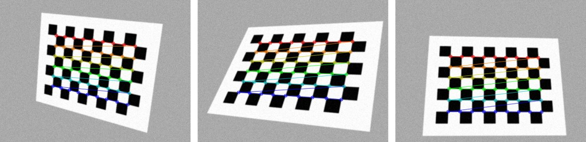
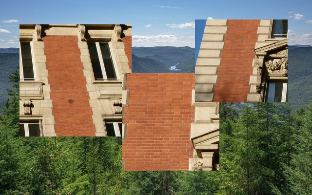
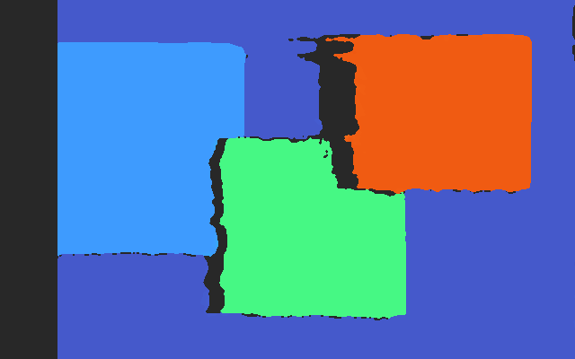
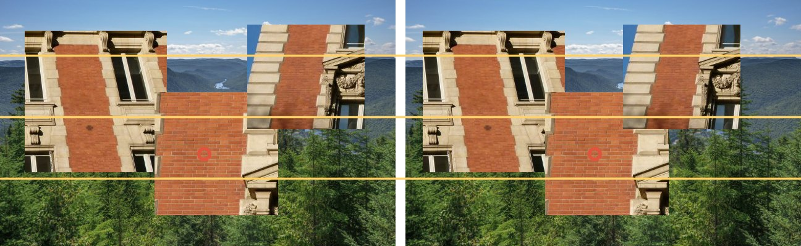
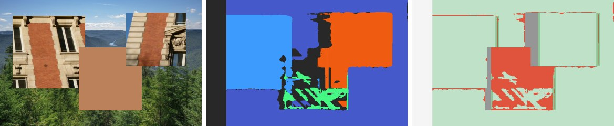

Session 7 · Geometry
Two views,one scene
Transforms, homographies, cameras — and depth from two eyes
Session 6's close-up, bent onto the whole building by one 3 × 3 matrix — the outline is where it lands
🇹🇭 บรรยายก่อน แล้วครึ่ง A นำเสนอ T6 หลังบรรยาย · เตือน: ส่งหัวข้อโปรเจกต์สัปดาห์หน้า (สัปดาห์ 8) · ชี้ภาพปก: ภาพซูมของคาบ 6 ถูกบิดลงบนภาพเต็มด้วย matrix 3 × 3 ตัวเดียว (homography จาก RANSAC ของคาบ 6) — กรอบเหลืองคือที่ที่มันตกลง
🇬🇧 Lecture first; half A presents T6 afterwards. Remind: project topic due next week (week 8). The cover: session 6's close-up bent onto the whole building by one 3 × 3 matrix (the homography from session 6's RANSAC) — the yellow outline is where it lands.
Today
One question, four parts
The question Two views of one scene are tied together by geometry. How are they related — and how do two cameras win back the depth a photo loses?
Each part ends in the same notebook — lab.ipynb, one section per part. Project topic due next week.
🇹🇭 อ่านคำถามของคาบ · ย้อนคาบ 6: ได้คู่จุดที่เชื่อได้แล้ว (ratio test + RANSAC) — วันนี้ใช้คู่จุดนั้นทำ geometry · คาบ 2 สัญญาไว้ว่า depth ที่หายไปจะได้คืนในคาบนี้ (part D)
🇬🇧 Read the session question. Back to session 6: we now have point pairs we can trust (ratio test + RANSAC) — today we use them for geometry. Session 2 promised the lost depth back in this session (part D).
A
Transforms
How do you move, turn and stretch a picture with one matrix?
By the end of this part Apply 2D transforms as 3 × 3 matrices, and count their degrees of freedom.
🇹🇭 หน้าเปิด part: อ่านคำถามกับสิ่งที่จะทำได้ท้าย part แล้วเข้าเนื้อหา
🇬🇧 Part opener: read the question and what you can do by the end of the part, then go in.
A · Transforms
You have transformed pictures already
the photo shift turn 15° shrink 0.65 flip seen at a slant
Session 4, slide 41: augmentation shifts, turns, shrinks and flips a photo. Session 2 B: a zoom is a crop, then an enlargement.
Each one moves every pixel by the same rule: (x, y) → (x′, y′).
Part A writes every rule as one 3 × 3 matrix — so a chain of moves is one matrix too, and the last picture (a slant) is the one part B needs.
🇹🇭 ย้อนคาบ 4 D (augmentation · คาบ 4 หน้า 41) และคาบ 2 B (zoom = crop + ขยาย) · ชี้ภาพสุดท้าย: มุมเอียงแบบนี้ทำด้วยการหมุน/ย่อไม่ได้ — ต้องใช้ projective (ท้าย A และทั้ง B)
🇬🇧 Back to session 4 D (augmentation, session 4 slide 41) and session 2 B (zoom = crop + enlarge). The last picture: a slant cannot be made by turning or shrinking — it needs the projective family (end of A, and all of B).
A · Transforms
Add a 1: every move becomes one matrix
(1, 2) (4, 3) (0, 0) moves too shift by (3, 1): every corner moves the same way — including the one at (0, 0)
A 2 × 2 matrix turns, stretches and flips — but it can never shift: A·(0, 0) is always (0, 0).
Give every point a third number, 1: (x, y) → (x, y, 1). Now the shift is a column of the matrix:
$$\begin{bmatrix}1&0&t_x\\0&1&t_y\\0&0&1\end{bmatrix}\begin{bmatrix}x\\y\\1\end{bmatrix}=\begin{bmatrix}x+t_x\\y+t_y\\1\end{bmatrix}$$
Worked example · the picture shift (3, 1): [1 0 3 / 0 1 1 / 0 0 1]·(1, 2, 1) = (1 + 3, 2 + 1, 1) = (4, 3) · (0, 0, 1) → (3, 1)
🇹🇭 ที่มาของพิกัด homogeneous: matrix 2 × 2 เลื่อนจุดไม่ได้ เพราะ (0, 0) อยู่ที่เดิมเสมอ · เติม 1 → การเลื่อนกลายเป็นคอลัมน์ที่สาม · ชี้ภาพ: มุมที่ (0, 0) ก็เลื่อนด้วย
🇬🇧 Why homogeneous coordinates: a 2 × 2 matrix cannot shift, since (0, 0) always stays put. Add a 1 and the shift becomes the third column. The picture: even the corner at (0, 0) moves.
A · Transforms
Turn the two axes, and you have the rotation matrix
(cos θ, sin θ) (−sin θ, cos θ) (1, 0) (0, 1) θ the unit square turned by θ: each axis arrow lands on one column of R
Any point is x steps along (1, 0) plus y steps along (0, 1). Turn the two arrows by θ, and the point follows: x·(cos θ, sin θ) + y·(−sin θ, cos θ).
$$\begin{bmatrix}x'\\y'\end{bmatrix}=\begin{bmatrix}\cos\theta&-\sin\theta\\ \sin\theta&\cos\theta\end{bmatrix}\begin{bmatrix}x\\y\end{bmatrix}$$
Times a scale s, plus a shift: a similarity — 4 numbers (θ, s, tx , ty ).
Worked example · θ = 30°, cos 0.866, sin 0.5 (2, 0) → (2·0.866, 2·0.5) = (1.73, 1.00) · (0, 2) → (−2·0.5, 2·0.866) = (−1.00, 1.73)
🇹🇭 ที่มาของ matrix หมุน: จุดใด ๆ = x ก้าวตามแกน (1, 0) + y ก้าวตามแกน (0, 1) · หมุนแกนทั้งสอง → คอลัมน์ของ R คือแกนที่หมุนแล้ว · ในภาพ y ชี้ลง matrix เดียวกันจึงหมุนตามเข็มบนจอ (demo หน้าถัดไป)
🇬🇧 Where R comes from: any point is x steps along (1, 0) plus y along (0, 1); turn both axes and the columns of R are the turned axes. In an image y points down, so the same matrix turns clockwise on screen (next slide's demo).
A · Transforms
Four families of transforms
Each family frees more numbers and keeps less: translation 2 (keeps lengths) · similarity 4 (angles) · affine 6 (parallel lines) · projective 8 (only straight lines).
🇹🇭 กดทีละ family แล้วลาก slider: matrix ทางขวาเปลี่ยนสด และ readout คูณให้ดูกับมุมขวาบน (120, −70) · ย้ำ: ในภาพ y ชี้ลง θ บวกจึงหมุนตามเข็ม · projective: เส้นขนานไม่ขนานอีกต่อไป — ภาพเอียงแบบหน้า 4
🇬🇧 Press each family and drag: the matrix updates live and the readout multiplies the top-right corner (120, −70) through it. In an image y points down, so a positive θ turns clockwise. Projective: parallel lines stop being parallel — the slant of slide 4.
A · Transforms
Order matters: turn then shift ≠ shift then turn
(1, 2) (1, 1) (−2, 4) turn, then shift shift, then turn the point (1, 2), a 90° turn R about (0, 0) and a shift T by (3, 0) — dashed = the turn
A chain of moves is one product. The matrix on the right acts first : T·R·p turns, then shifts.
$$T R=\begin{bmatrix}0&-1&3\\1&0&0\\0&0&1\end{bmatrix}\;\ne\;R T=\begin{bmatrix}0&-1&0\\1&0&3\\0&0&1\end{bmatrix}$$
Worked example · the picture T·R·(1, 2, 1) = (0 − 2 + 3, 1 + 0 + 0, 1) = (1, 1) · R·T·(1, 2, 1) = (0 − 2 + 0, 1 + 0 + 3, 1) = (−2, 4)
The turn is about (0, 0): shift first, and the point swings around the origin from further away.
🇹🇭 ทำมือกับห้อง: คูณ T·R กับ (1, 2, 1) → (1, 1) · R·T → (−2, 4) · ย้ำ matrix ขวาสุดทำก่อน · เหตุผลเชิงภาพ: หมุนรอบ (0, 0) ถ้าเลื่อนก่อน จุดอยู่ไกลขึ้นจึงเหวี่ยงไปไกล
🇬🇧 Work it with the room: T·R times (1, 2, 1) → (1, 1); R·T → (−2, 4). The rightmost matrix acts first. Why: the turn is about (0, 0) — shift first and the point swings from further away.
A · Transforms
Divide by w — and w = 0 is a point at infinity
t = 0 t = 1 t = 3 t = 9 x = −1 and x = 1 H (0, 1) = H·(0, 1, 0) after ÷ w: they meet H = [1 0 0 / 0 1 0 / 0 1 1] on the points (±1, t) for t = 0, 1, 3, 9 — the dashed lines run on to (0, 1)
(x, y, w) and (2x, 2y, 2w) are the same point : read it as (x/w, y/w). So H and 2H do the same — 9 numbers, 8 degrees of freedom.
Run along a line, (1, t, 1) for larger t: divided by t it tends to (0, 1, 0 ) — a point with w = 0, infinitely far.
Session 2 A: parallel rails meet at the vanishing point. That is H·(0, 1, 0) = (0, 1, 1): the point at infinity made finite.
Worked example · t = 3 on x = 1 H·(1, 3, 1) = (1, 3, 1 + 3) = (1, 3, 4) → (0.25, 0.75) · t = 9 → (0.1, 0.9) · x = −1 gives (−0.25, 0.75) → both lines head for (0, 1)
🇹🇭 ที่มาของการหารด้วย w: (x, y, w) กับ (2x, 2y, 2w) คือจุดเดียวกัน → 9 ตัวเลขแต่ 8 DOF · เดินตามเส้น t → ∞ เหลือทิศ (0, 1, 0) = จุดที่อนันต์ · H ทำให้จุดนั้นมีพิกัดจริง = vanishing point ของคาบ 2 A · คำนวณ t = 3 กับห้อง
🇬🇧 Why divide by w: (x, y, w) and (2x, 2y, 2w) are one point, so 9 numbers but 8 DOF. Walk along a line, t → ∞, and only the direction (0, 1, 0) is left — a point at infinity. H gives it real coordinates: session 2 A's vanishing point. Work t = 3 with the room.
A · Transforms
Try it: move a point
Try it The point p = (2, 3).
Shift it by (4, −1) with a 3 × 3 matrix. Turn it by 90° about (0, 0) (cos 90° = 0, sin 90° = 1). Apply H = [1 0 2 / 0 1 1 / 0 0.5 1] to the point (2, 2). Where does it land? Answer 1. [1 0 4 / 0 1 −1 / 0 0 1]·(2, 3, 1) = (6, 2) · 2. (2·0 − 3·1, 2·1 + 3·0) = (−3, 2) · 3. (2 + 2, 2 + 1, 0.5·2 + 1) = (4, 3, 2) → ÷ 2 → (2, 1.5) .Write the point as (x, y, 1).
Multiply, then divide by w.
🇹🇭 ให้เวลา 2 นาที · แบบข้อสอบ Final · ข้อ 3 อย่าลืมหารด้วย w
🇬🇧 Give two minutes. Final-exam style. Question 3: do not forget to divide by w.
A · Transforms
A transform is one 3 × 3 matrix
Add a 1 (x, y) → (x, y, 1): a shift becomes a matrix column, so every move is one product.
Four families Translation 2 · similarity 4 · affine 6 · projective 8 degrees of freedom — each keeps less.
Order and w The right-hand matrix acts first. Divide by w; w = 0 is a direction — a vanishing point.
Transforms as 3 × 3 matrices in NumPy, warpAffine and warpPerspective on a photo, the order of products, what each family keeps
More practice · Session 7 A — practice bank with worked solutions →
Later: session 9 — a shaking video is steadied by undoing one transform per frame (T9). Next · B: the projective family lines up two photos of a flat scene.
🇹🇭 สรุป A · ชี้ต่อคาบ 9 (video stabilisation: transform ต่อเฟรม) · แล้วต่อ B: projective = homography
🇬🇧 Wrap up A. Forward: session 9 (video stabilisation, one transform per frame). Then B: the projective family is the homography.
B
Homography & stitching
How do two photos of a flat scene line up?
By the end of this part Explain why a homography needs 4 point pairs, and how matching, RANSAC and warping build a panorama.
🇹🇭 หน้าเปิด part: อ่านคำถามกับสิ่งที่จะทำได้ท้าย part แล้วเข้าเนื้อหา
🇬🇧 Part opener: read the question and what you can do by the end of the part, then go in.
B · Homography & stitching
A flat scene seen twice: one homography
photo 1 photo 2 a flat wall: one H photo 1 photo 2 near + far, camera moved: no single H a post seen from above · left: every point of a wall has one place in each photo · right: the post and the wall behind it share a pixel in photo 1, not in photo 2
Two photos are tied by one 3 × 3 matrix H — the projective family of part A — when every point has one place in each: a flat scene, or a camera that only turns in place.
Move the camera in front of a deep scene and near things shift more than far ones (parallax ): no single H fits. That shift is what part D turns into depth.
Part C, slide 24, shows why: with the camera matrix, a plane drops one column and leaves a 3 × 3 matrix.
🇹🇭 เมื่อไหร่ใช้ H ได้: ระนาบเดียว หรือกล้องหมุนอยู่กับที่ · เมื่อไหร่ไม่ได้: ฉากลึก + กล้องเลื่อน (parallax) → part D ใช้ parallax วัดความลึก · ชี้ต่อ part C ที่จะแสดงที่มา
🇬🇧 When one H fits: a single plane, or a camera that only turns. When not: a deep scene and a moving camera (parallax) — part D turns that into depth. Part C shows where H comes from.
B · Homography & stitching
8 unknowns, 4 point pairs
1 1 2 2 3 3 4 4 (x, y) (x′, y′) four point pairs: each fixes where one corner goes
H has 9 numbers, but H and 2H move points the same way (slide 9): fix h₉ = 1 and 8 unknowns are left.
$$x'=\frac{h_1x+h_2y+h_3}{h_7x+h_8y+1}$$
Multiply out the fraction — linear in the h's:
$$h_1x+h_2y+h_3-h_7xx'-h_8yx'=x'$$
Same for y′: each pair gives 2 equations , so 4 pairs give 8 — enough.
Worked example · the pair (2, 1) → (3, 2) x′: 2h₁ + h₂ + h₃ − 6h₇ − 3h₈ = 3 · y′: 2h₄ + h₅ + h₆ − 4h₇ − 2h₈ = 2 · three more pairs → 8 equations, 8 unknowns
🇹🇭 ที่มา 4 คู่: H มี 9 ตัวแต่ scale อิสระ (หน้า 9) → 8 ตัวไม่รู้ · คูณตัวส่วนออก → สมการเชิงเส้นใน h · คู่ละ 2 สมการ → 4 คู่ = 8 · ตัวอย่างบนสไลด์เขียนสองสมการจากคู่เดียว (demo หน้าถัดไปแก้ 8 สมการนี้จริงในเบราว์เซอร์)
🇬🇧 Why 4 pairs: H has 9 numbers but a free scale (slide 9) → 8 unknowns. Multiplying out the denominator makes each equation linear in the h's; 2 per pair, so 4 pairs give 8. The worked example writes both equations of one pair; the next demo solves all eight in the browser.
B · Homography & stitching
Fix the perspective with four corners
Reset corners drag the four red corners onto any rectangle of the wall
🇹🇭 ลากมุมทั้งสี่ไปที่มุมของสี่เหลี่ยมบนกำแพง (หน้าต่างสองแถวก็ได้) → ภาพขวาคือกำแพงที่มองตรง · readout: H ที่แก้ 8 สมการจากหน้า 13 แล้ว + มุมล่างขวาคูณผ่าน H แล้วหารด้วย w (w ≠ 1 ตรงนี้) · ภาพตึกของคาบ 6
🇬🇧 Drag the four corners onto any rectangle of the wall (two rows of windows work well); the right side is the wall seen straight on. Readout: the H solved from slide 14's eight equations, and the bottom-right corner multiplied through it and divided by w (w ≠ 1 here). Session 6's building.
B · Homography & stitching
Stitching: match, RANSAC, warp, blend

1–2 · match + RANSAC: 692 → 527 pairs 
3 · warp the close-up by H 
4 · blend
Session 6 C–D: ratio test, then RANSAC with 4-pair samples — 692 matches, 527 inliers (session 6, slide 34: w 0.5 needs 72 tries).
Fit H to the inliers, warp one photo into the other's frame, then blend where they overlap. Two views, one picture.
🇹🇭 ไล่สี่ขั้นจากซ้ายไปขวา · ย้อนคาบ 6 C–D: ratio 692 คู่ → RANSAC 527 inlier (Try it คาบ 6 หน้า 34: w 0.5 → 72 รอบ) · ภาพคู่เดิมของคาบ 6 — ภาพซูมจึงตกลงข้างในภาพเต็ม
🇬🇧 Walk the four steps left to right. Back to session 6 C–D: 692 ratio-test matches → 527 RANSAC inliers (session 6 slide 34: w 0.5 → 72 tries). Session 6's pair, so the close-up lands inside the whole photo.
B · Homography & stitching
Blend the seam: a weight that rises smoothly

pasted: a step along the edge 
feathered over 40 px: no line
The close-up was made 25% brighter, as auto-exposure might between two shots. Pasted, its edge shows.
$$\text{out}=\alpha\,B+(1-\alpha)\,A,\qquad \alpha=\min\!\left(1,\ \frac{d}{40}\right)$$
d = distance inside B's edge: α grows from 0 at the edge to 1 at 40 px, so B fades in instead of starting with a step.
Session 3 B: smoothing turns a sharp step into a gradual one — here, the step between two photos.
Worked example · a pixel 10 px inside the edge α = 10 ÷ 40 = 0.25 · A = 107, B = 136 → 0.25·136 + 0.75·107 = 114.2
🇹🇭 ที่มาการ blend: ค่าเฉลี่ยถ่วงน้ำหนัก α ไล่จาก 0 ที่ขอบถึง 1 ที่ 40 px · ภาพซูมทำให้สว่างขึ้น 25% เพื่อให้เห็นรอย (ของจริงสองภาพนี้แสงใกล้กันมาก) · ตัวอย่างคือ pixel จริงที่ระยะ 10 px
🇬🇧 Where the blend comes from: a weighted average, α rising from 0 at the edge to 1 at 40 px. The close-up was brightened 25% so the seam shows (the real pair is lit almost the same). The worked example is a real pixel 10 px in.
B · Homography & stitching
Try it: how many pairs, how many tries?
Try it
How many point pairs fix a similarity (4 DOF)? An affine transform (6)? A homography (8)? Half of your matches are wrong. With p = 0.99, how many RANSAC tries does a homography need? (ln 0.01 = −4.605, ln 0.9375 = −0.0645) Answer 1. each pair gives 2 equations: similarity 2 pairs · affine 3 · homography 4 · 2. w⁴ = 0.0625 → 1 − 0.0625 = 0.9375 → 4.605 ÷ 0.0645 ≈ 71.4 → 72 tries (session 6).pairs = DOF ÷ 2
N = ln(1 − p) ÷ ln(1 − ws )
🇹🇭 ให้เวลา 2 นาที · ข้อ 2 คือ Try it คาบ 6 หน้า 34 — ตอนนี้รู้แล้วว่า s = 4 มาจากไหน
🇬🇧 Give two minutes. Question 2 is session 6 slide 34's Try it — now you know where s = 4 comes from.
B · Homography & stitching
Homography: four matches line up a flat scene
When A flat scene, or a camera that only turns: one H ties the two photos.
How many 8 unknowns, 2 equations per pair: 4 pairs fix H — the sample size RANSAC draws.
Stitch Match (session 6 C) → RANSAC (6 D) → warp by H → blend the seam.
Two overlapping views cut from one photo with a known H; SIFT + RANSAC + findHomography against the truth; warp and blend a panorama; fix a perspective with four points
More practice · Session 7 B — practice bank with worked solutions →
Later: T7-3 — structure from motion recovers the cameras and the 3D points from many photos. Next · C: how a 3D point becomes a pixel.
🇹🇭 สรุป B · ชี้ต่อ T7-3 (structure from motion) · แล้วต่อ C: camera matrix (และที่มาของ H จากระนาบ)
🇬🇧 Wrap up B. Forward: T7-3 (structure from motion). Then C: the camera matrix (and where a plane's H comes from).
C
The camera matrix
How does a 3D point become a pixel number?
By the end of this part Project a 3D point to a pixel with K[R | t].
🇹🇭 หน้าเปิด part: อ่านคำถามกับสิ่งที่จะทำได้ท้าย part แล้วเข้าเนื้อหา
🇬🇧 Part opener: read the question and what you can do by the end of the part, then go in.
C · The camera matrix
x = f·X/Z, written as a matrix
image plane O (Y, Z) y f Z Y two similar triangles: y / f = Y / Z — session 2, slide 8
Session 2, slide 8: two similar triangles give x = f·X/Z.
Dividing by Z is not a matrix product — with part A's extra coordinate it waits until the end:
$$\begin{bmatrix}f&0&0\\0&f&0\\0&0&1\end{bmatrix}\begin{bmatrix}X\\Y\\Z\end{bmatrix}=\begin{bmatrix}fX\\fY\\Z\end{bmatrix}\;\to\;\left(\frac{fX}{Z},\frac{fY}{Z}\right)$$
Then divide by the last number: slide 9's ÷ w, with w = the depth Z.
Worked example · f = 50 mm, the point (0.6, 0.3, 3) m (50·0.6, 50·0.3, 3) = (30, 15, 3) → ÷ 3 → (10, 5) mm on the image plane
🇹🇭 ย้อนคาบ 2 หน้า 8 (สามเหลี่ยมคล้าย) · ที่มา: การหารด้วย Z ทำด้วย matrix ไม่ได้ แต่พิกัด homogeneous ให้หารเป็นขั้นสุดท้าย = ÷ w ของหน้า 9 โดย w คือความลึก · คำนวณตัวอย่างกับห้อง
🇬🇧 Back to session 2 slide 8 (similar triangles). Where it comes from: dividing by Z is no matrix product, but homogeneous coordinates leave the division to the end — slide 9's ÷ w, with w = depth. Work the example with the room.
C · The camera matrix
Intrinsics K: millimetres to pixels
u v (0, 0) (cx , c y ) x mm ÷ pitch one photosite a pixel number counts photosites from the top-left corner
Session 2, slide 25: a sensor is a grid of photosites · session 1, slide 4: pixel (0, 0) is the top-left corner.
Millimetres on the sensor ÷ the photosite size = pixels — so f in pixels is fmm ÷ pitch. The axis hits the middle, (cx , cy ), not (0, 0): add it.
$$K=\begin{bmatrix}f_x&0&c_x\\0&f_y&c_y\\0&0&1\end{bmatrix}$$
Worked example · a phone: f 4 mm, pitch 2 µm, 4000 × 3000 pixels f = 4 ÷ 0.002 = 2000 px · centre (2000, 1500) · a point 0.5 mm right, 0.25 mm down → (250 + 2000, 125 + 1500) = (2250, 1625)
🇹🇭 ที่มา K: mm ÷ ขนาด photosite = pixel (ย้อนคาบ 2 หน้า 25) · แกนแสงตกกลางภาพ ไม่ใช่ (0, 0) มุมซ้ายบน (คาบ 1 หน้า 4) → บวก (cx, cy) · ตัวอย่างกล้องมือถือ 4 mm / 2 µm
🇬🇧 Where K comes from: millimetres ÷ photosite size = pixels (session 2 slide 25); the optical axis lands in the middle, not at the top-left (0, 0) of session 1 slide 4 → add (cx, cy). The phone example: 4 mm, 2 µm.
C · The camera matrix
Extrinsics [R | t]: where the camera stands and looks
x z world origin camera C = (2, 0, −4) (3, 1, 2) world (1, 1, 6) for the camera top view · the camera is not at the origin, so world numbers must first become camera numbers
The pinhole formula needs the point in the camera's coordinates: origin at the pinhole, z straight ahead.
$$X_{\text{cam}}=R\,(X-C)=R\,X+t$$
Subtract where the camera stands (C), then turn to where it looks (R — slide 6's matrix, in 3D); t = −RC. Together with K: x = K [R | t] X , a 3 × 4 matrix.
Worked example · the picture: R = I (looking along z) t = −C = (−2, 0, 4) · (3, 1, 2) + t = (1, 1, 6): 1 m right, 1 m down, 6 m ahead
🇹🇭 ที่มา [R | t]: สูตร pinhole ต้องการพิกัดของกล้อง → ลบตำแหน่งกล้อง C แล้วหมุนด้วย R (matrix หมุนของหน้า 6 ในสามมิติ) → t = −RC · รวม K: x = K[R | t]X (3 × 4) · ตัวอย่างบนภาพ
🇬🇧 Where [R | t] comes from: the pinhole formula needs camera coordinates — subtract the camera position C, then turn by R (slide 6's rotation, in 3D) → t = −RC. With K: x = K[R | t]X, 3 × 4. Work the picture's example.
C · The camera matrix
A plane drops one column: that is the homography
a plane: Z = 0 in its own coordinates camera 1 camera 2 H₁ H₂ H₂ H₁⁻¹ part B's flat scene: each camera turns the plane into its photo with one 3 × 3 matrix
Put the world's z = 0 on the plane. Then the third column of [R | t] meets a 0 and drops out:
$$K\,[\,r_1\;r_2\;r_3\;t\,]\begin{bmatrix}X\\Y\\0\\1\end{bmatrix}=\underbrace{K\,[\,r_1\;r_2\;t\,]}_{3\times3\;=\;H}\begin{bmatrix}X\\Y\\1\end{bmatrix}$$
Plane → photo 1 is H₁, plane → photo 2 is H₂, so photo 1 → photo 2 is H₂H₁⁻¹: one 3 × 3 matrix — slide 13's claim.
Worked example · K: f 800, centre (400, 300) · R = I, t = (0, 0, 4) H = K·[1 0 0 / 0 1 0 / 0 0 4] = [800 0 1600 / 0 800 1200 / 0 0 4] · plane point (1, 1) → (2400, 2000, 4) → (600, 500) — the same as K·(1, 1, 4)
🇹🇭 ปิดสัญญาหน้า 13: ตั้ง z = 0 บนระนาบ → คอลัมน์ r3 คูณกับ 0 หายไป → K[r1 r2 t] คือ 3 × 3 = H · สองกล้อง: H₂H₁⁻¹ · ตัวอย่าง: ทางลัด 3 × 3 ได้ pixel เดียวกับการฉายเต็ม (600, 500)
🇬🇧 Closing slide 13's promise: put z = 0 on the plane, the r3 column meets a 0 and drops → K[r1 r2 t] is a 3 × 3 H. Two cameras: H₂H₁⁻¹. The example: the 3 × 3 shortcut gives the same pixel as the full projection, (600, 500).
C · The camera matrix
Move the camera, watch the picture
Session 2 lab A: a 1 m cube in perspective — now with the whole camera.
f zooms (K) · distance and move x change C · turn changes R. Turn the camera towards the cube and it comes back to the middle.
🇹🇭 ลาก f: ภาพใหญ่ขึ้นทั้งก้อน (K) · ลาก distance: ใกล้แล้วหน้าหน้ากับหน้าหลังต่างกันมาก (perspective) · move x แล้ว turn หันกลับหาก้อน · readout ไล่มุมหน้า-บน-ขวาผ่าน R(X − C) แล้ว K แล้วหาร
🇬🇧 Drag f: the whole cube grows (K). Drag distance: close up, front and back faces differ a lot (perspective). Move x, then turn back towards the cube. The readout follows the front-top-right corner through R(X − C), then K, then the division.
C · The camera matrix
Calibration: the camera measures itself on a checkerboard

3 of 12 drawn boards · true K: f 900 px, centre (330, 245)
Each corner: its place on the board (X, Y, 0) is known, its pixel is found → one H per photo = K[r₁ r₂ t] (slide 24).
r₁ ⟂ r₂, same length: 2 equations about K per photo → several tilted photos give K and the lens distortion (cv2.calibrateCamera).
photos f found off error px 12 tilted, sharp 900.4 0% 0.08 12 tilted, noisy 900.8 0.1% 0.12 3 tilted, noisy 898.1 0.2% 0.12 6 facing the camera 1070.7 19% 0.11
Reprojection error: project each corner back with the K found; RMS distance to where it was seen. The centre lands within 4 px every time.
Boards facing straight on: error 0.11 px, yet f is 19% off. A small error does not prove K right — tilt the board .
Overview, not on the final · T7-1 goes deeper.
🇹🇭 ⚪ ภาพรวม ไม่ออก Final · ต่อจากหน้า 24: checkerboard คือระนาบ → แต่ละภาพได้ H = K[r1 r2 t] · r1 ⟂ r2 และยาวเท่ากัน → ภาพละ 2 สมการเกี่ยวกับ K → หลายภาพได้ K · ตารางวัดจริงจาก make_assets.py (K จริง f 900): เอียงหลายมุมได้ใกล้มาก แม้มี noise · กระดานหันตรงทุกภาพ error เล็ก 0.11 px แต่ f ผิด 19% — error เล็กไม่ได้แปลว่า K ถูก · ชี้ต่อ T7-1
🇬🇧 ⚪ Overview, not on the final. From slide 24: a checkerboard is a plane, so each photo gives H = K[r1 r2 t]; r1 ⟂ r2 and equal length → 2 equations about K per photo → several photos give K. The table is measured (make_assets.py, true f 900): tilted views land close even with noise; boards all facing the camera give a small error (0.11 px) but f 19% off — a small error does not prove K is right. Forward: T7-1.
C · The camera matrix
Try it: where does the point land?
Try it K has f = 500 px and centre (c
x , c
y ) = (320, 240).
A point is at (1, 0.5, 5) m in camera coordinates. Compute K·X and the pixel. The camera moves 1 m to the right (R unchanged). Where is the point now in camera coordinates, and at which pixel? Answer 1. (500·1 + 320·5, 500·0.5 + 240·5, 5) = (2100, 1450, 5) → ÷ 5 → (420, 290) · 2. X − C: (1 − 1, 0.5, 5) = (0, 0.5, 5) → (1600, 1450, 5) → (320, 290) — straight ahead, the image centre column.K·X, then divide by the third number.
Camera coordinates: R (X − C).
🇹🇭 ให้เวลา 2 นาที · แบบข้อสอบ Final · ข้อ 2: กล้องเลื่อนขวา จุดจึงเลื่อนซ้ายในพิกัดกล้อง
🇬🇧 Give two minutes. Final-exam style. Question 2: the camera moves right, so the point moves left in camera coordinates.
C · The camera matrix
A camera is K[R | t]
K · inside the camera f in pixels (mm ÷ photosite) and the image centre: millimetres to pixel numbers.
[R | t] · where it is Subtract the camera position, turn to its direction: world to camera coordinates.
x = K[R | t] X Multiply, divide by the depth. On a plane one column drops: the homography of part B.
Project a cube with K[R | t] (session 2 lab A, continued): change f, move and turn the camera, check the plane's 3 × 3 shortcut, calibrate K from checkerboard corners
More practice · Session 7 C — practice bank with worked solutions →
Later: T7-1 — calibration in depth (lens distortion, Zhang's method). Next · D: two cameras, two K[R | t] — and the depth comes back.
🇹🇭 สรุป C · ชี้ต่อ T7-1 (calibration) · แล้วต่อ D: กล้องสองตัว = K[R | t] สองชุด
🇬🇧 Wrap up C. Forward: T7-1 (calibration). Then D: two cameras are two K[R | t].
D
Stereo
How do two cameras measure depth?
By the end of this part Compute depth from disparity, and explain why a match must lie on its epipolar line.
🇹🇭 หน้าเปิด part: อ่านคำถามกับสิ่งที่จะทำได้ท้าย part แล้วเข้าเนื้อหา
🇬🇧 Part opener: read the question and what you can do by the end of the part, then go in.
D · Stereo
Two eyes, two cameras: the near shifts more
left eye right eye near far what each eye sees (the same two points) seen from above · the near point lands far apart in the two pictures, the far point almost in the same place
Try it now: hold up a thumb, close one eye, then the other. The thumb jumps; the far wall hardly moves.
Two cameras side by side do the same. The shift of one point between the two pictures is its disparity : d = xleft − xright .
Session 6 C: find the same point in two photos. Part B: a deep scene has no single H — this shift is why.
🇹🇭 ทดลองในห้อง: ยกนิ้วโป้ง ปิดตาทีละข้าง นิ้วกระโดด ผนังแทบไม่ขยับ · disparity = ระยะที่จุดเลื่อนระหว่างสองภาพ · ย้อน part B: parallax คือสิ่งที่ทำให้ไม่มี H เดียว
🇬🇧 In the room: thumb up, close one eye then the other — the thumb jumps, the wall barely moves. Disparity = how far a point shifts between the two pictures. Back to part B: this parallax is why no single H fits.
D · Stereo
Depth from disparity: Z = f·B/d
image planes Oₗ Oᵣ P = (X, Z) B f xₗ xᵣ two pinholes B apart, both facing straight ahead (top view)
Session 2, slide 8 — and slide 21: x = f·X/Z, once for each camera.
Measure X from the left pinhole. The right pinhole sits B further along, so it sees X − B:
$$x_l=\frac{fX}{Z},\quad x_r=\frac{f(X-B)}{Z}\;\Rightarrow\;d=x_l-x_r=\frac{fB}{Z}$$
X cancels: disparity depends only on depth . Turn it round: Z = f·B/d — near means large d.
Worked example · f 800 px, B 0.12 m (fB = 96) Z = 2 m → d = 96 ÷ 2 = 48 px · Z = 8 m → d = 12 px · measured d = 24 px → Z = 96 ÷ 24 = 4 m
🇹🇭 ที่มา Z = fB/d: สูตร pinhole ของคาบ 2 สองครั้ง กล้องขวาเห็น X − B → ลบกัน X หายไป เหลือ d = fB/Z · ตัวอย่าง f 800 px, B 12 cm (fB = 96) ใช้ต่อทั้ง part (ฉากหน้า 34 สร้างด้วยค่านี้)
🇬🇧 Where Z = fB/d comes from: session 2's pinhole formula twice; the right camera sees X − B; subtract and X cancels: d = fB/Z. The example f 800 px, B 12 cm (fB = 96) runs through the part (slide 34's scene is built with it).
D · Stereo
Push the point away: the disparity shrinks
Double the depth, half the disparity. Far away, d gets close to 0 — a longer baseline B makes it larger again.
🇹🇭 ลาก Z 1 → 20: d ลดตาม 1/Z (4 m → 24 px · 8 m → 12 px) · ลาก B: d โตตาม B · readout แทนค่าในสูตรทั้งสองทาง · f คงที่ 800 px
🇬🇧 Drag Z from 1 to 20: d falls like 1/Z (4 m → 24 px, 8 m → 12 px). Drag B: d grows with B. The readout substitutes into the formula both ways; f stays 800 px.
D · Stereo
One pixel of error hurts far more when far
12 24 36 48 60 0 4 8 12 16 d 48 → 47: 2.00 → 2.04 m d 12 → 11: 8.00 → 8.73 m disparity d (px) depth Z (m) Z = 96 / d (f 800 px, B 0.12 m): the same one-pixel step, near and far
A match is only ever right to about a pixel. How much depth is one pixel?
$$\Delta Z\approx\left|\frac{dZ}{dd}\right|\cdot 1=\frac{fB}{d^2}=\frac{Z^2}{fB}$$
The error grows with Z² : twice as far, four times worse. A longer baseline B divides it down.
Worked example · fB = 96 near: d 48 → 47 = 2.00 → 2.04 m (+2%) · Z²/fB = 4/96 ≈ 0.04 · far: d 12 → 11 = 8.00 → 8.73 m (+9%) · 64/96 ≈ 0.67
🇹🇭 ที่มา: ΔZ ≈ |dZ/dd| = fB/d² = Z²/(fB) (อนุพันธ์ — ย้อน Taylor คาบ 4 หน้า 13) · ไกลสองเท่า ผิดสี่เท่า · ตัวอย่างไม่ซ้ำ Try it หน้า 38 · baseline ยาวขึ้นช่วย
🇬🇧 Where it comes from: ΔZ ≈ |dZ/dd| = fB/d² = Z²/(fB) (a derivative — session 4 slide 13's Taylor). Twice as far, four times worse. The example differs from slide 38's Try it. A longer baseline helps.
D · Stereo
Depth is lost — and now we win it back

left view of a drawn scene 
disparity from OpenCV StereoSGBM
board at true d measured d Z = 96 / d 8 m 12 12 8 m 4 m 24 24 4 m 2 m 48 48 2 m
Session 2, slides 13–14: 1 m at 5 m, 2 m at 10 m and 4 m at 20 m make the same 10 mm picture — “depth is lost; later, we win it back”.
A second camera tells them apart: their disparities differ.
Worked example · fB = 96 Z 5, 10, 20 m → d = 96/5, 96/10, 96/20 = 19.2, 9.6, 4.8 px — three different numbers for one picture size
The scene on the left was drawn with f 800 px, B 0.12 m; a program found the matches and got the depths back exactly.
🇹🇭 ปิดสัญญาคาบ 2 หน้า 13–14 · ฉากที่สร้างเอง (กระดาน 3 แผ่นที่ 2, 4, 8 m หน้ากำแพง 16 m · texture จากภาพ CC0 ที่ใช้อยู่แล้ว) → StereoSGBM วัด disparity 48 / 24 / 12 → ความลึกกลับมาครบ · สีดำ = บริเวณที่ถูกบังในอีกภาพ หาคู่ไม่ได้
🇬🇧 Closing session 2 slides 13–14's promise. A drawn scene (three boards at 2, 4, 8 m in front of a wall at 16 m, textures from the CC0 photos already used) → StereoSGBM measures 48 / 24 / 12 → the depths come back. Black = hidden in the other view, no match.
D · Stereo
The twin of a point lies on one line
photo 1 photo 2 epipolar line the ray: every depth it could be one pixel of photo 1 = one ray; seen from camera 2, the ray is a line
One pixel in photo 1 could be anywhere along its ray. Seen from camera 2, that ray is a line — the epipolar line .
So the twin of the pixel lies on that line: search one row , not the whole photo — faster, and fewer look-alikes to confuse the match (session 6 C).
Worked example · a 640 × 480 photo search the whole photo: 640 × 480 = 307,200 places · search one line: 640 places — 480 times fewer
The matrix behind the line (the fundamental matrix): T7-2.
🇹🇭 epipolar เป็นแนวคิดเท่านั้น (ไม่มีข้อคำนวณ F ใน Final) · pixel หนึ่งจุด = รังสีหนึ่งเส้น · กล้องที่สองเห็นรังสีเป็นเส้น → หาคู่บนเส้นเดียว · ตัวอย่าง: ค้นน้อยลง 480 เท่า · F อยู่ใน T7-2
🇬🇧 Epipolar geometry is a concept only (no F calculations in the final). One pixel = one ray; the second camera sees the ray as a line → search one line. The example: 480 times less search. The fundamental matrix is T7-2.
D · Stereo
Rectify: make the lines horizontal

Turn both photos (a homography each — part B) so the epipolar lines become rows . Then a point's twin is on the same row, and disparity is just the difference of columns.
Worked example · the circled point column 330 on the left, 306 on the right → d = 24 px → Z = 96 ÷ 24 = 4 m: the middle board
🇹🇭 หลัง rectify: เส้น epipolar = แถว · disparity = ผลต่างของคอลัมน์ · ชี้วงกลมแดง: แถวเดียวกันทั้งสองภาพ เลื่อน 24 px → 4 m · rectify ใช้ homography ของ part B
🇬🇧 After rectification epipolar lines are rows and disparity is a column difference. The red circles: same row in both views, 24 px apart → 4 m. Rectifying uses part B's homographies.
D · Stereo
From two views to many: structure from motion
one point, seen by every camera
Stereo knew where its two cameras stood. With photos from anywhere, find the cameras too .
Measured · 2 views, 150 drawn points, matches 0.5 px off 129 / 150 kept by RANSAC · turn within 0.6° · step direction within 3.2° · points 6.9% off at 4–6 m — two close views are rough
Limit: no size. The step comes out as 1, no unit: a scene twice as big, seen from twice as far, gives the same pixels. One known length fixes it.
1 · Match same points across photos (session 6)
→ 2 · Pose each camera's R, t
→ 3 · Triangulate rays meet at a 3D point (part D)
→ 4 · Bundle adjust move all at once to shrink the reprojection error
Overview, not on the final · T7-3: COLMAP · T7-7: DUSt3R does it with a trained network.
🇹🇭 ⚪ ภาพรวม ไม่ออก Final · stereo รู้ตำแหน่งกล้อง → SfM ต้องหากล้องเองด้วย · 4 ขั้น: match (คาบ 6) → pose → triangulate (part D) → bundle adjustment (ลด reprojection error ของหน้าก่อน ๆ ทุกกล้องพร้อมกัน) · ตัวเลขวัดจริง (make_assets.py): สองภาพ match คลาด 0.5 px → จุดคลาด 6.9% · ข้อจำกัด: ไม่รู้ขนาด (scene ใหญ่สองเท่า ถ่ายไกลสองเท่า ได้ pixel เดิม) — ย้อนคาบ 2: depth is lost · ชี้ต่อ T7-3, T7-7
🇬🇧 ⚪ Overview, not on the final. Stereo knew where the cameras were; SfM has to find them too. Four steps: match (session 6) → pose → triangulate (part D) → bundle adjustment (shrink the reprojection error over all cameras at once). Measured (make_assets.py): two views, matches 0.5 px off → points 6.9% off. The limit: no size — a scene twice as big, seen from twice as far, gives the same pixels (session 2's depth ambiguity again). Forward: T7-3, T7-7.
D · Stereo
Try it: how far, and how sure?
Try it A stereo camera has f = 700 px and B = 0.1 m (fB = 70).
A point has disparity 35 px. How far is it? What if the match is 1 px off (34 px)? A far point has disparity 7 px. How far? And at 6 px? By how many percent does one pixel change the depth in each case? Answer 1. 70 ÷ 35 = 2 m · 70 ÷ 34 ≈ 2.06 m · 2. 70 ÷ 7 = 10 m · 70 ÷ 6 ≈ 11.7 m · 3. near ≈ 3% · far ≈ 17% — the Z² of slide 33.Z = f·B / d
ΔZ ≈ Z² / (f·B)
🇹🇭 ให้เวลา 2 นาที · แบบข้อสอบ Final · ข้อ 3 โยงกับหน้า 33
🇬🇧 Give two minutes. Final-exam style. Question 3 ties to slide 33.
D · Stereo
Stereo: disparity buys back depth
Disparity The same point shifts between two side-by-side cameras: Z = f·B/d — near shifts more.
Precision One pixel of error costs Z²/(fB) metres: far depth is rough; a longer baseline helps.
Search one line The twin lies on the epipolar line; after rectifying, on the same row. Many photos: structure from motion.
Z = f·B/d and a pixel of error; a rectified stereo pair → StereoSGBM → a depth map; matching rows (no fundamental matrix)
More practice · Session 7 D — practice bank with worked solutions →
Later: session 9 — optical flow matches points across time instead of across cameras · T7-6 Depth Anything and T7-7 DUSt3R get depth from one or two photos with a trained model.
🇹🇭 สรุป D · ชี้ต่อคาบ 9 (optical flow = จับคู่ข้ามเวลา) · T7-6, T7-7 · แล้ววัดผล
🇬🇧 Wrap up D. Forward: session 9 (optical flow matches across time). T7-6, T7-7. Then: how well it works.
Session 7 · how well it works
Measured: where does the geometry go wrong?
A · Warping Every warp resamples. Turn 30° and back: 3.5 grey levels off (bicubic). Turn 15° twenty-four times: 8.8 — yet the 24 matrices multiply to exactly I. Multiply first, warp once.
B · Homography Matches 1 px off. H from 4 pairs: corners 29 px off (median; 1 draw in 10 over 619). 8 pairs: 3.4 · 20: 1.7 · 50: 1 px.
C · Calibration Slide 26: tilted boards with noise give f 900.8 (true 900); boards facing the camera 1070.7, 19 % off, at the same small error.
D · Stereo SGBM on the drawn scene, bad = off by more than 1 px: textured 2.2 % · near depth edges 11.9 % · a board with no texture 73.6 % · noise σ 25 in one view 12.7 %.
Worked example · one bad pixel true d 24 (the 4 m board), SGBM says 26 → |26 − 24| = 2 > 1: bad · depth 96 ÷ 26 = 3.69 m instead of 4 m
🇹🇭 ทุกตัวเลขวัดจริงด้วย tools/s07/evaluate.py · A: ทุก warp ต้อง resample จึงเบลอทีละนิด — คูณ matrix ก่อน warp ครั้งเดียว (ย้อนหน้า 8 ลำดับการคูณ) · B: 4 คู่แก้ H ได้พอดี แต่ error ทุกตัวเข้าไปใน H ด้วย → ใช้คู่มาก + RANSAC (คาบ 6) · C: สรุปหน้า 26 · D: ฉากวาดเอง รู้ disparity จริงทุก pixel → ขอบวัตถุผิดมากกว่า 5 เท่า · พื้นเรียบไม่มีอะไรให้จับคู่ · noise ในภาพเดียว · กล้องขวามืดกว่า 30% → 5.5% · หน้าถัดไป: benchmark ที่วัดแบบนี้
🇬🇧 Every number measured by tools/s07/evaluate.py. A: every warp resamples and blurs a little — multiply the matrices, warp once (slide 8's order of products). B: 4 pairs solve H exactly, errors included → many pairs + RANSAC (session 6). C: slide 26 in brief. D: the drawn scene has its true disparity at every pixel → depth edges err 5× more; a flat surface gives nothing to match; noise in one view; the right view 30 % darker → 5.5 %. Next: the benchmark that measures stereo this way.
Session 7 · research
Research: score stereo region by region

simulated: the drawn scene, middle board painted flat · SGBM disparity · bad pixels red, hidden grey — the paper’s own: Fig. 4 and 17 Scharstein & Szeliski (IJCV 2002), the Middlebury benchmark. Stereo papers showed pictures, not numbers. They split methods into four steps (matching cost, aggregation, optimisation, refinement) and scored bad pixels against true disparity: overall, without texture, near depth edges.
Result Tsukuba, 20 methods: graph cuts 1.94 % bad, a 21 × 21 window 5.23 %. Near depth edges every method errs more: 1.9–5.6× its overall rate.
Limits they state Per-image settings beat fixed ones · 4 simple scenes, one “virtually solved”. Ours: 11.9 % near edges, 2.2 % elsewhere.
Read the paper (the authors’ copy) →
🇹🇭 ตรวจกับ paper แล้ว: 4 ขั้น matching cost / aggregation / optimization / refinement (§3) · bad pixel = |d_C − d_T| > δd, δd = 1.0 (§5.1) · แยก region: textureless T · occluded O (ไม่นับ) · depth discontinuities D (Fig. 4) · §7 เปรียบเทียบ 20 วิธี ค่าคงที่ทุกภาพ · Table 5 (อ่านจากภาพ render หน้า 30) Tsukuba: graph cuts (ของผู้เขียน *4) B_O 1.94 · B_D 9.49 · SSD+MF 5.23 · 24.66 · ทุกวิธี B_D > B_O (1.9–5.6 เท่า) · Table 6: ปรับค่าตามภาพดีขึ้นมาก (เช่น Map GC 0.31 → 0.09) · Map 'virtually solved' · อยากได้ข้อมูลที่บัง/ไม่มี texture มากขึ้น (§7) · ภาพของเราจำลองการวัดแบบเดียวกันบนฉากวาดเอง · หลังจากนี้ Middlebury ออกชุดใหม่หลายรุ่น และ benchmark นี้ทำให้ stereo วัดผลด้วยตัวเลขกันทั้งวงการ · Hirschmüller SGM (OpenCV StereoSGBM) อยู่ใน References
🇬🇧 Checked against the paper: four steps — matching cost, aggregation, optimisation, refinement (§3); bad pixel = |d_C − d_T| > δd, δd = 1.0 (§5.1); regions: textureless T, occluded O (left out), depth discontinuities D (Fig. 4); §7 compares 20 methods with fixed settings. Table 5 (read from a render of page 30), Tsukuba: graph cuts (theirs, *4) B_O 1.94, B_D 9.49; SSD+MF 5.23, 24.66; every method B_D > B_O (1.9–5.6×). Table 6: per-image settings help a lot (Map GC 0.31 → 0.09); Map 'virtually solved'; harder data with occlusions and textureless areas wanted (§7). Our figure simulates the same scoring on the drawn scene. Middlebury later released many new sets; the benchmark made stereo a field of numbers. Hirschmüller's SGM (OpenCV StereoSGBM) is in the references.
Session 7 · what to remember
Geometry ties views together
Transforms: add a 1, and every move is a 3 × 3 matrix — 2 / 4 / 6 / 8 degrees of freedom; divide by w.Homography: a flat scene or a turning camera; 8 unknowns, 4 pairs; match → RANSAC → warp → blend.Camera: x = K[R | t] X — millimetres to pixels, world to camera, then divide by depth.Stereo: Z = f·B/d; one pixel costs Z²/(fB); search the twin along one line.
Session 2 said “depth is lost — later, we win it back”: that was part D. All session 7 practice →
🇹🇭 ทวน 4 ข้อ A–D · ปิดสัญญาคาบ 2 หน้า 14 · ต่อด้วยครึ่ง A นำเสนอ T6
🇬🇧 Recap A–D. Session 2 slide 14's promise is kept. Half A's T6 talks follow.
Next · Session 8
What is in the picture, where — and which pixels?
Today: how views of a scene are tied together — transforms, homographies, cameras, depth.
Session 8 — detection and segmentation : a box around every object, a mask for every pixel — and session 5's CLIP comes back to find things by name.
Keep from today: a box is four numbers in pixel coordinates · transforms move boxes and masks too.
References
Where session 7 comes from
R. Hartley & A. Zisserman (2004). Multiple View Geometry in Computer Vision , 2nd ed., ch. 2, 4, 6, 9.
R. Szeliski (2022). Computer Vision: Algorithms and Applications , 2nd ed., §2.1, §8.1–8.2, §12.1.
A. Torralba, P. Isola & W. Freeman (2024). Foundations of Computer Vision , ch. 38–41 (visionbook.mit.edu).
S. K. Nayar. First Principles of Computer Vision — Image Stitching; Camera Calibration; Uncalibrated Stereo.
H. Hirschmüller (2008). Stereo processing by semiglobal matching and mutual information. IEEE TPAMI 30(2) — OpenCV's StereoSGBM.
D. Scharstein & R. Szeliski (2002). A taxonomy and evaluation of dense two-frame stereo correspondence algorithms. IJCV 47 — the Middlebury benchmark.
Z. Zhang (2000). A flexible new technique for camera calibration. IEEE TPAMI 22(11) — the checkerboard method behind cv2.calibrateCamera.
J. L. Schönberger & J.-M. Frahm (2016). Structure-from-motion revisited. CVPR — COLMAP.
Photos (CC0, Wikimedia Commons): Dinkum, “Façade d'immeuble 1 rue Bayard” and “(détail)” (session 6) · Wilfredor, Jacques-Cartier National Park (session 2). The stereo scene (and its flat-board variant), the checkerboards, every warp, blend, diagram and number: made by programs written for this course (OpenCV, NumPy).